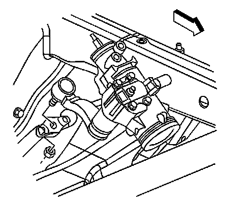

Power Steering Gear Replacement (Non-Rack and Pinion)
Power Steering Gear Replacement (Non Rack and Pinion)
Removal Procedure
Tools Required
^ J 6632-01 Pitman Arm Puller
^ J 24319-B Universal Steering Linkage Puller
^ J 29107-A Pitman Arm Puller
1. Place a drain pan under the vehicle.
2. Remove the engine protection shield, if equipped.
Notice: Refer to Power Steering Hose Disconnected Notice.
3. Remove the power steering hoses from the steering gear.
4. Cap the ends of the hoses and the power steering gear in order to prevent any entrance of dirt.
5. Disconnect the intermediate shaft from the steering gear.

6. Remove the pitman arm to relay rod nut.
7. Disconnect the pitman arm from the relay rod using J 24319-B.
8. Remove the bolts retaining the steering gear to the frame.
9. Remove the steering gear from the vehicle.

10. Remove the pitman arm to the power steering gear retaining nut.

11. Remove the pitman arm from the power steering gear using J 6632-01 or J 29107-A.
Installation Procedure
1. Install the pitman arm to the power steering gear.
Notice: Refer to Fastener Notice.
2. Install the pitman arm to power steering gear retaining nut and washer.
Tighten the nut to 250 N.m (184 lb ft).
3. Install the steering gear to the frame and install the retaining bolts.
Tighten the bolts to 150 N.m (110 lb ft).
4. Install the pitman arm to the relay rod.
5. Install the pitman arm to the relay rod nut.
Tighten the nut to 62 N.m (46 lb ft).
6. Install the intermediate shaft to the steering gear.
7. Remove the caps or plugs from the steering gear and hoses.
8. Install the hoses to the steering gear.
Tighten the hoses fittings to 32 N.m (24 lb ft).
9. Install the engine protection shield, if equipped.
10. Remove the safety stands.
11. Lower the vehicle.
12. Bleed the power steering system. Refer to Power Steering System Bleeding.